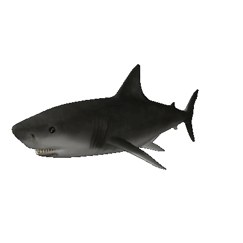

By Sydney Manno
GREAT WHITE SHARK
Great White Shark Facts
They have no bones .. just cartilage!
Sharks have a sense of the electromagnetic field through "spots" near their nose and mouth called ampullae of Lorenzini
Shark skin feels like sandpaper
Great Whites play an important role in keeping the populations of sea lions in check
because of this, Great Whites actually help keep stability and diversity within the ocean
Great White Sharks are normally found in coastal waters along The Northeast and West Coast, as well as South Africa, Japan, Chile, Oceania, and the Meditteranean.
